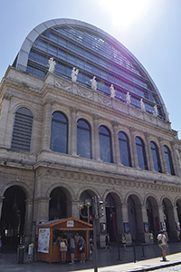
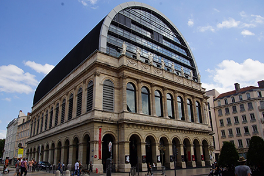
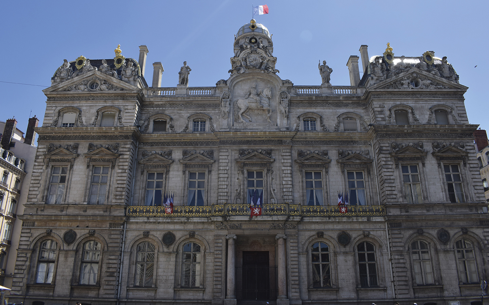
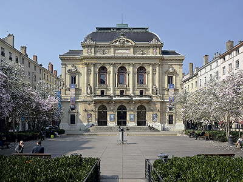
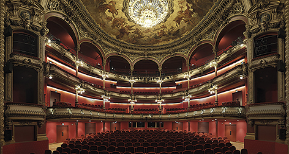
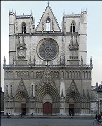
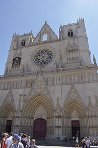

També la podem conèixer com la
Ópera Nouvel de Lió, és la seu
de l’Òpera National a Lió. Entre
els anys 1985 i 1993 l’arquitecte
Jean Nouvel va reconstruir l’antiga
òpera construïda l’any 1831
per l’arquitecte Jacques-Germain
Soufflot. L’òpera de Lió, situada
davant de L’Hôtel de Ville, té capacitat
per a 1.200 persones.


Hôtel de Ville
Hôtel de Ville en català vol dir
“Hotel de la Ciutat” no vol dir que
sigui un hotel, és el mateix de què
en català s’anomena ajuntament.
És un dels edificis més antics de
la ciutat, va ser construït l’any
1672, en aquella època es deia
que era l’ajuntament més bonic
de França. L’edifici és d’estil barroc,
i està situat entre l’òpera de
Lió i la Plaça Terreaux.

Théâtre des Celestins
Aquest teatre és un dels més antics
de França. Rep aquest nom
perquè abans de ser un teatre era
el convent dels celestins (un orde
religiós). Posteriorment va ser
reconstruït i va passar a ser un
teatre, que es deia Thêatre des
Variétés. El 1873 va haver-hi un
incendi que va destruir tot l’edifici
per complert, i és per això que
el mateix any l’arquitecte lionès
Garpard André va construir el nou
Thêatre des Celestins. Està situat
al centre de la Presqu’île, al costat
de la Plaça Bellecour.


Cathédral Saint-Jean Baptiste
La Catedral de Saint-Jean Baptiste
es va construir entre els segles
XII i XV, és un dels monuments
més antics i bonics del barri de
Vieux Lyon. L’edifici és conegut
pels 320 medallons esculpits a
la seva façana gòtica, que representa
episodis bíblics i mitològics.


Basilique de Notre Dame de Fourvière
La Basilique Notre Dame de Fourvière
es troba a la zona alta del
turó de Fourvière. La podem veure
des de gairebé qualsevol punt
de la ciutat. Es va construir entre
els anys 1814 i 1917, amb el motiu
de guardar la verge María en
algun lloc. Es van necessitar dos
dissenyadors, ja que la construcció
va ser molt duradora. El primer
va ser Pierre Bossan i el segon
que va continuar la feina de
l’anterior va ser Sainte-Marie Perno.
Des de dalt de la muntanya hi
ha unes vistes fascinants de tot
Lió i és un atractiu pels turistes.
És considerada Patrimoni Històric
per part de la UNESCO.